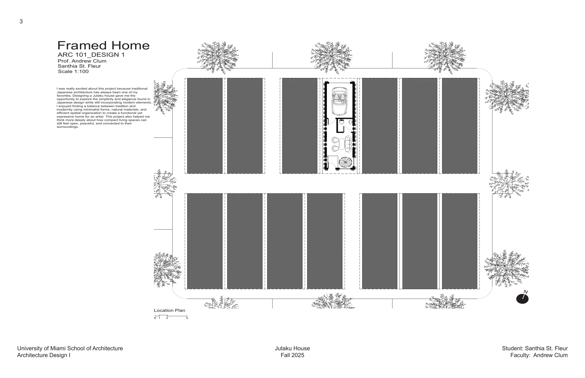
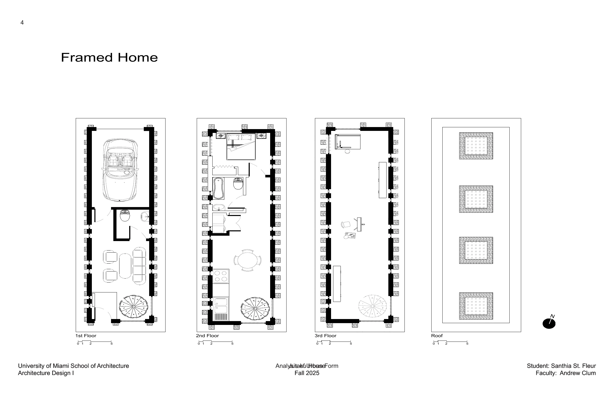
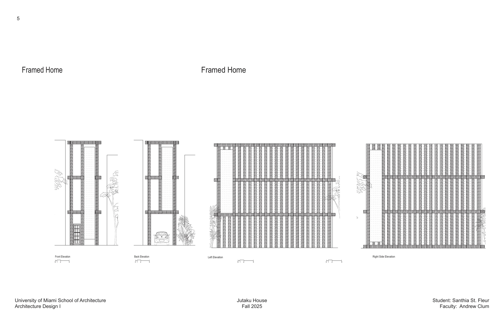
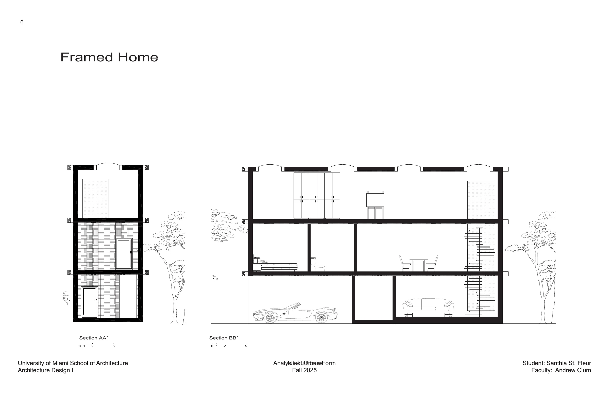
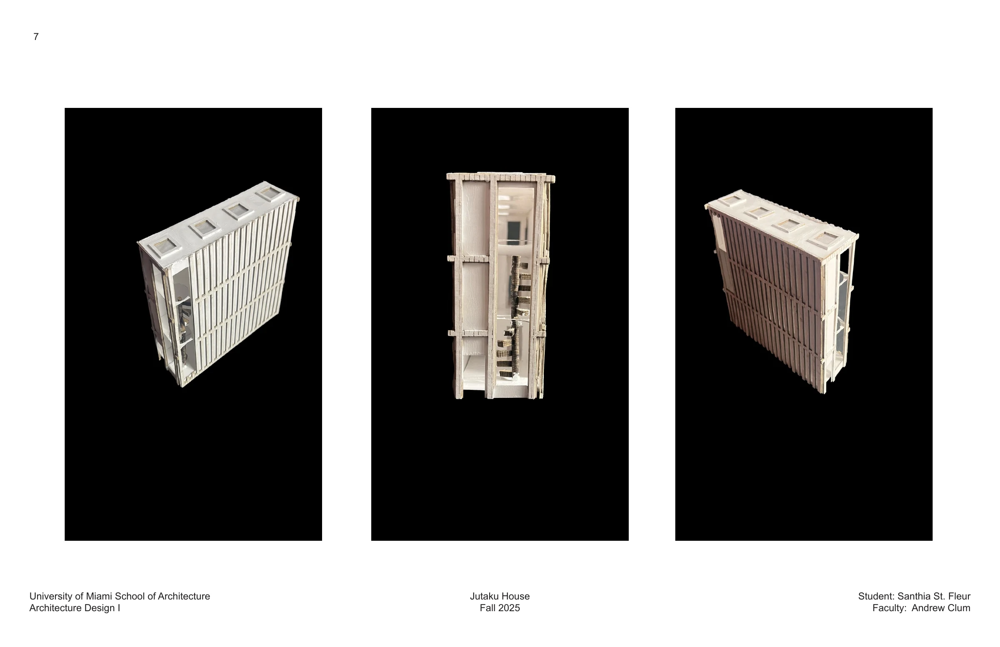
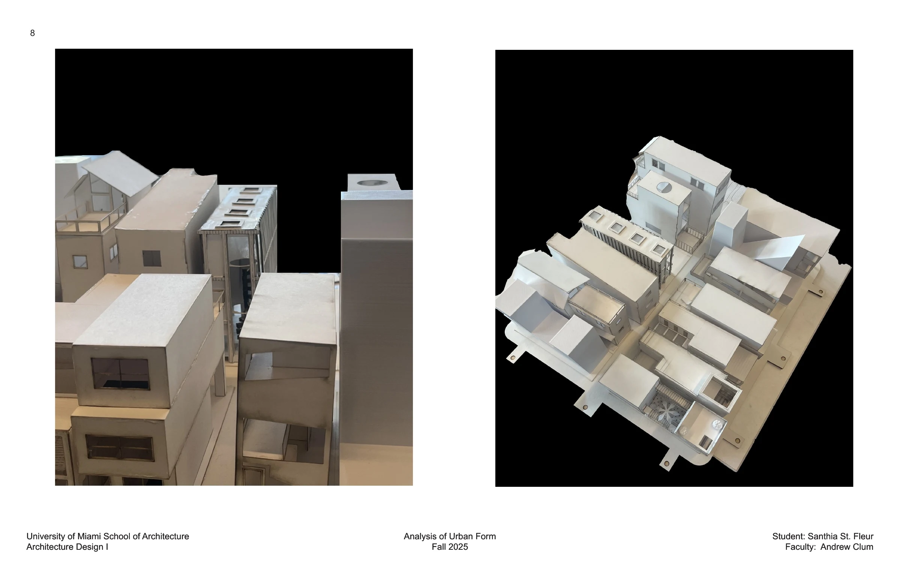

Projects / Project 02 · ARC 101: Design I
Jutaku House
A compact artist’s home balancing Japanese architectural influence, modern elements, and efficient spatial organization.

Jutaku House explores the simplicity and elegance of traditional Japanese architecture while incorporating modern elements. Minimalist forms, natural materials, and efficient spatial organization shape a functional, expressive home for an artist.
The project considers how compact living can still feel open, peaceful, and connected to its surroundings.




